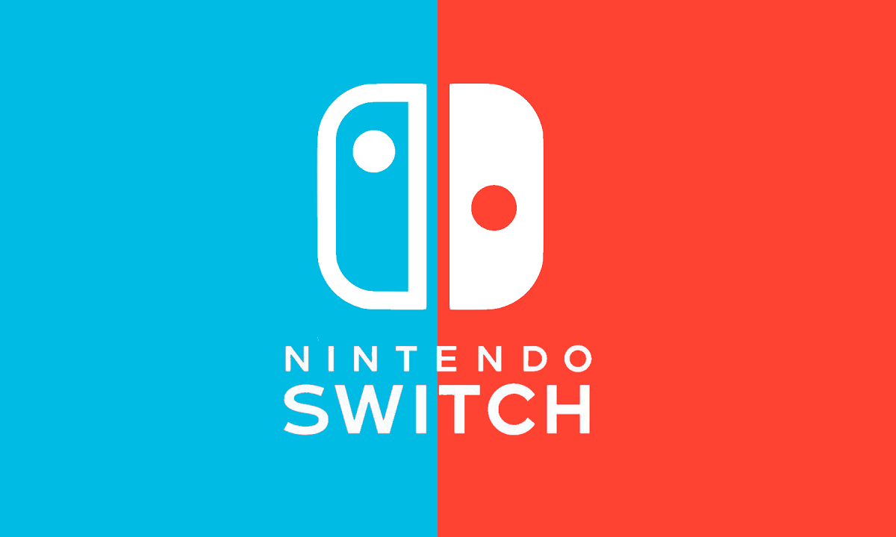
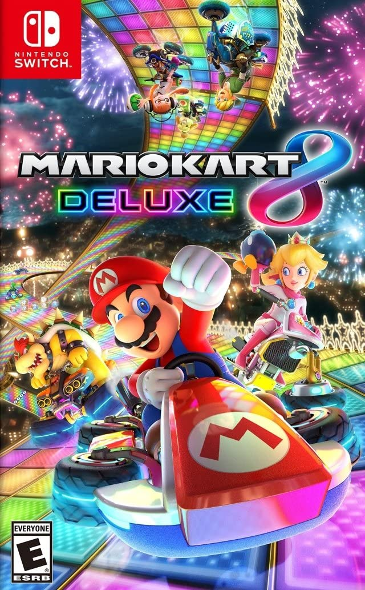
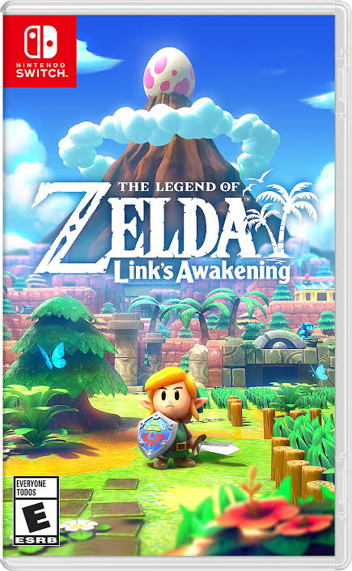

Nintendo Switch cuenta con una gran variedad de videojuegos para todo tipo de jugadores. Entre sus juegos más conocidos se encuentran Mario Kart 8 Deluxe, The Legend of Zelda, Super Mario Odyssey y Animal Crossing.

Un divertido juego de carreras donde puedes competir contra tus amigos y diferentes personajes.

Una aventura llena de exploración, misterios y diferentes lugares por descubrir.
Una de las principales características de Nintendo Switch es que permite jugar de diferentes maneras. La consola puede utilizarse conectada al televisor o de forma portátil. También permite disfrutar de diferentes juegos con amigos y familiares.